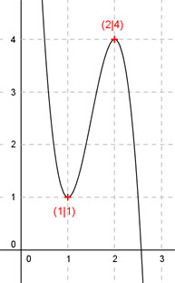

Aufgabe 74 Der Graph einer ganzrationalen Funktion 3. Grades hat ein Maximum bei (2|4) und ein Minimum bei (1|1). Wie lautet seine Funktionsgleichung?  Allgemeine Form einer ganzrationalen Funktion 3. Grades: f(x) = ax3 + bx2 + cx + d f’(x) = 3ax2 + 2bx + c f’’(x) = 6ax + 2b 4 Bedingungen: 1. Hat ein Maximum bei (2|4) bedeutet zum einen: f(2) = 4 --> a * 23 + b * 22 + c * 2 + d = 4 --> 8a + 4b + 2c + d = 4 I 2. Hat ein Maximum bei (2|4) bedeutet zum anderen: f’(2) = 0 --> 3a * 22 + 2b * 2 + c = 0 --> 12a + 4b + c = 0 II 3. Hat ein Minimum bei (1|1) bedeutet zum einen: f(1) = 1 --> a * 13 + b * 12 + c * 1 + d = 1 --> a + b + c + d = 1 III 4. Hat ein Minimum bei (1|1) bedeutet zum anderen: f’(1) = 0 --> 3a * 12 + 2b * 1 + c = 0 --> 3a + 2b + c = 0 IV I + III * (-1) 8a + 4b + 2c + d = 4 -a - b - c - d = -1 ---------------------- 7a + 3b + c = 3 V II + IV * (-1) 12a + 4b + c = 0 -3a - 2b - c = 0 ----------------- 9a + 2b = 0 VI IV * (-1) + V -3a - 2b - c = 0 7a + 3b + c = 3 ----------------- 4a + b = 3 VII VII * (-2) + VI -8a - 2b = -6 9a + 2b = 0 -------------- a = -6 a = -6 in VII eingesetzt: 4 * (-6)+ b = 3 -24 + b = 3 |+24 b = 27 a = - 6 und b = 27 in IV eingesetzt: 3 * (-6) + 2 * 27 + c = 0 -18 + 54 + c = 0 36 + c = 0|-36 c = -36 a = - 6 und b = 27 und c = -36 in III eingesetzt: -6 + 27 - 36 + d = 1 -15 + d = 1 |+15 d = 16 Gesuchte Funktionsgleichung: f(x) = -6x3 + 27x2 - 36x + 16